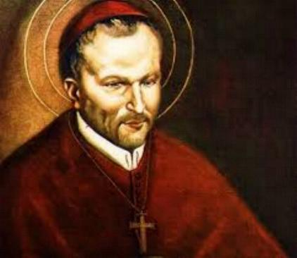

“SANTO AFONSO MARIA DE LIGÓRIO”

"HOMEM SÁBIO QUE ILUMINOU A SUA ÉPOCA COM ADMIRÁVEL INTELIGÊNCIA; TEÓLOGO E FILÓSOFO IDEALISTA, FUNDADOR DA CONGREGAÇÃO REDENTORISTA; DOUTOR DA IGREJA; BISPO ZELOSO E COMPETENTE, COM ALMA AMADURECIDA PELA FÉ E INSPIRADA PELO ESPÍRITO DE DEUS"
=ÍNDICE=
 FUNDAÇÃO
DA CONGREGAÇÃO REDENTORISTA
FUNDAÇÃO
DA CONGREGAÇÃO REDENTORISTA
ÚLTIMAS
NOTÍCIAS + E-MAIL + BUSCAS